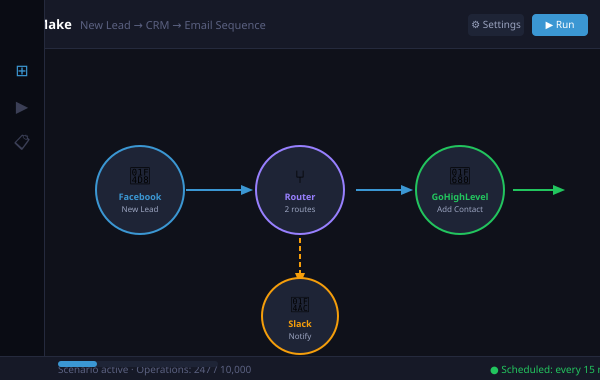

Processes that run the same way every time.
Onboarding, invoicing, reporting — the steps that break when one person is busy. I turn them into automated scenarios that never forget a step. Make Academy certified at Advanced level.

Enterprise automation power in a visual interface, built by someone who knows it inside out
Make.com is a cloud-based automation platform that connects thousands of apps through a visual drag-and-drop interface. It handles complex logic, data manipulation, error routing, and scheduled tasks without writing traditional code, while still giving developers the depth they need for serious work.
I hold Make Academy certifications at the Foundation, Basics, and Advanced levels, which means I don't just know the interface, I understand the architecture. I build Make.com scenarios that are clean, well-documented, error-resistant, and built to handle growth without breaking.
From simple two-step app connections to multi-branch operational workflows processing hundreds of records daily, Make.com handles it, and I make sure it handles it right.
From disconnected apps to a unified operation
Three clear phases to a working, documented Make.com scenario.
Understand the flow
I map the journey your data takes, from trigger event to final destination, and identify every manual step, decision point, and transformation in between. This becomes the blueprint for the scenario.
Design and configure
I build the Make.com scenario with clean module organisation, comprehensive error routing, and data validation at each stage. Scenarios are named, annotated, and structured so anyone can understand what they do.
Test, activate, and hand over
Full end-to-end testing with real data before activation. I monitor the first production run, resolve any edge cases, and deliver documentation covering the scenario logic, connections, and maintenance steps.